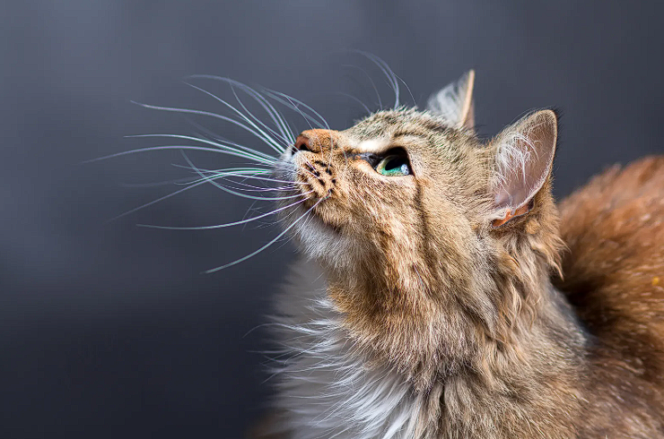

Introdução
Os gatos são animais fascinantes e misteriosos, conhecidos por sua independência, inteligência e comportamento único. Eles têm sido companheiros da humanidade há milênios, com sua história ligada tanto a mitos e superstições quanto ao carinho dos donos.
Curiosidades
Ronronar: O som de um gato ronronando pode ser uma forma de comunicação e também uma maneira de se tranquilizar, já que em algumas situações de estresse, eles podem ronronar para se acalmar.
Bigodes sensoriais: Os bigodes de um gato não são apenas decorativos; eles são altamente sensíveis e ajudam o animal a perceber o ambiente ao seu redor, detectando mudanças e até navegando em lugares apertados.
Dorminhocos: Os gatos dormem entre 12 e 16 horas por dia, o que os torna um dos animais mais sonolentos do reino animal. Esse descanso é crucial para sua saúde e bem-estar.